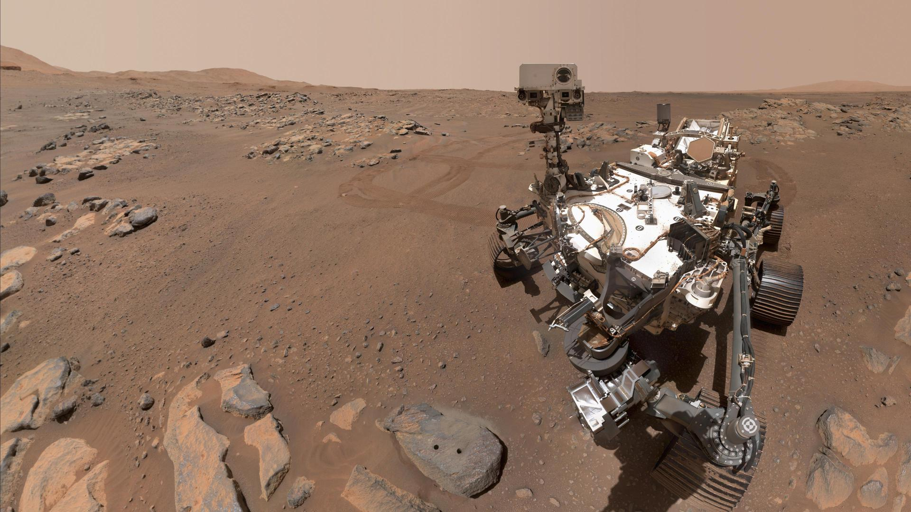
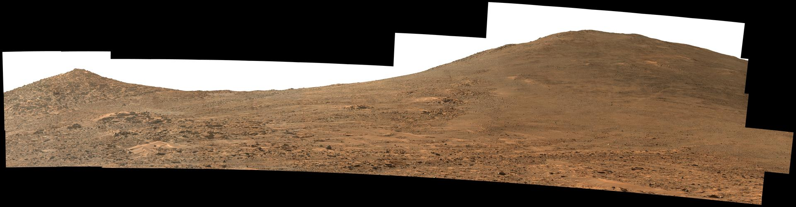
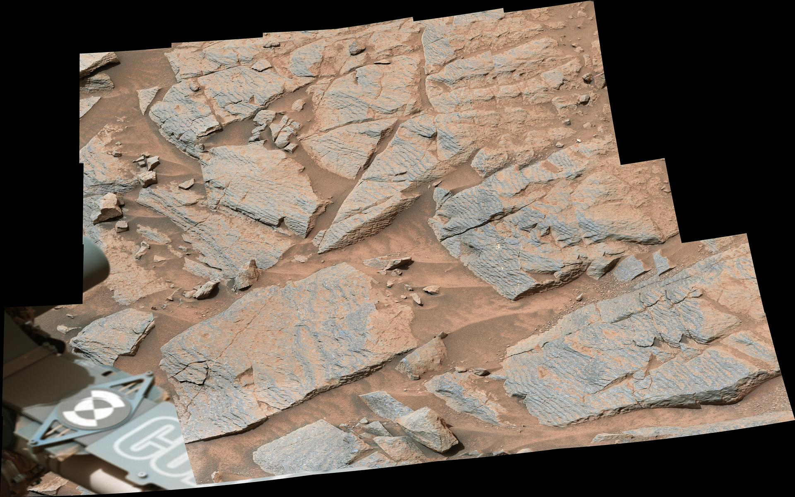
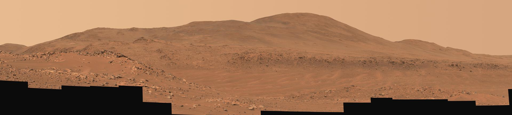
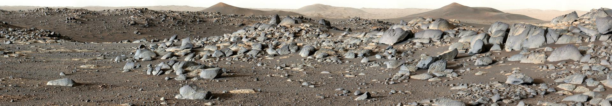

NEXO-ARES
Satellite maps show where rocks are—not whether an astronaut inside a pressurized NASA xEMU spacesuit will survive walking there. NEXO-ARES fuses real NASA/JPL telemetry with deterministic biomedical physics so astronauts explore Jezero Crater and return alive.



A rover can wait days to recharge solar panels. A human astronaut on foot has minutes of breathable oxygen, a shifted center of gravity inside a rigid suit, and cannot survive a radio blackout inside a crater.





.STL files for physical 3D printing.Scalable to Artemis Lunar & Mars Human Missions
Our geodesic and biomedical kernel can ingest any planetary DEM—from the Lunar South Pole (Artemis III) to Jezero Crater—protecting future human crews in real time.
Dual-Engine Resilience (Habitat Server + Autonomous Visor)
Operates connected to the Habitat Python FastAPI server (🟢 FastAPI Live) or 100% autonomously inside the suit browser (⚡ xEMU Engine), guaranteeing zero mission downtime.
Open & Inclusive Science (Tactile 3D .STL Printing)
Any school, university, or visually impaired student can export the 3D relief of Jezero Crater as a binary .STL file to touch Mars mountains and EVA routes with their own hands.